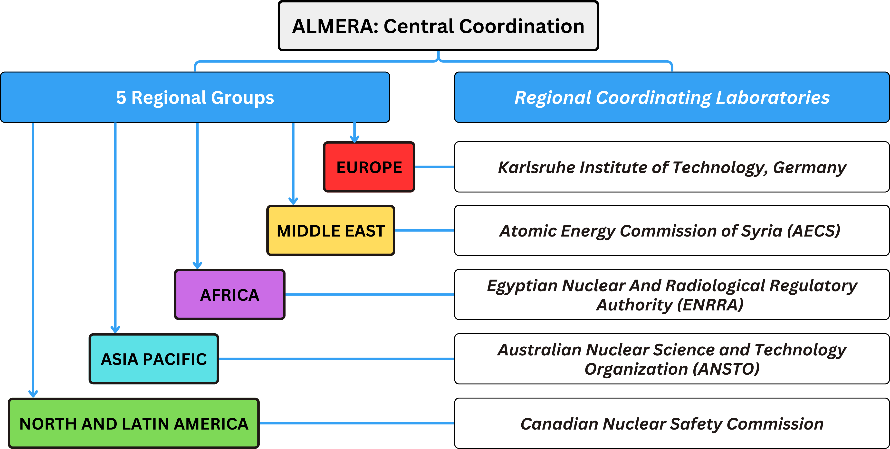

ALMERA Network Structure
Central Coordination
Based at the IAEA's Marine Environmental Laboratories in Monaco.
Responsibilities include:
- Coordinating the global network and developing medium/long-term targets
- Ensuring results are SI-traceable
- Evaluating lab performance through PTs and ILCs
- Organizing annual coordination meetings and reporting their outcomes and recommendations
- Disseminating relevant information to members (for example) meeting reports, guidelines for sample design, sample collection and treatment, etc.
Regional Groups
To enhance collaboration, ALMERA is subdivided into regional groups, with their respective coordinating centre:

- Laboratories must select their regional group; otherwise, IAEA assigns based on geography.
- Laboratories can switch groups at any moment for any reason.
- Participation in activities across regions is allowed, but each laboratory should formally belong to one group for organizational efficiency.
- Countries with multiple laboratories may assign them to different regional groups.
- Coordinating centres in each group should rotate every five years.